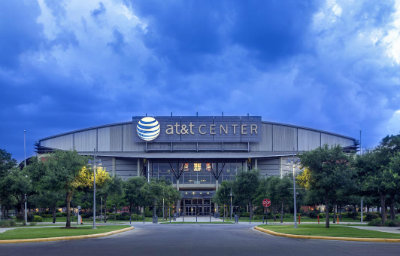
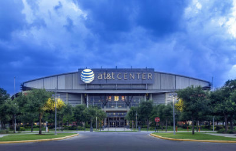

Coach
Stadium
Address: 1 AT&T Center Parkway, San Antonio, TX 78219
Capacity: 18,581
 
 History
The San Antonio Spurs are an American professional basketball team based in San Antonio, Texas. The Spurs compete in the National Basketball Association (NBA) as a member club of the league's Western Conference Southwest Division. The team plays its home games at the AT&T Center in San Antonio.
The Spurs are one of four former American Basketball Association (ABA) teams to remain intact in the NBA after the 1976 ABA–NBA merger and the only former ABA team to have won an NBA championship. The Spurs' five NBA championships are the fourth most in history behind only the Boston Celtics (17), Los Angeles Lakers (16), and Chicago Bulls (6). The Spurs currently rank first among active franchises for the highest winning percentage in NBA history, and have a winning head-to-head regular season record against every active NBA franchise.
In their 40 NBA seasons since 1976–1977, the Spurs have won 21 division titles. They have made the playoffs in 24 of the last 25 seasons (since 1989–1990) and have only missed the playoffs four times since entering the NBA; they have not missed the playoffs in the 19 seasons since Tim Duncan was drafted by the Spurs in 1997. With their 50th win in the 2015–2016 season, the Spurs extended their record for most consecutive 50+ win seasons to 17 (the 1998–99 season was shortened to 50 games because of a lockout and based on their win percentage of .740, would have easily surpassed 50 wins in an 82-game season, and thus extend the record by 2 more seasons). Thus, since the 1997–98 season, the Spurs have had 19 consecutive seasons with a winning percentage of .610 or greater during the regular season which is also an NBA record. Only the team's current head coach, Gregg Popovich, who had been the team's general manager before replacing Bob Hill in 1996, has had a longer tenure with the Spurs.